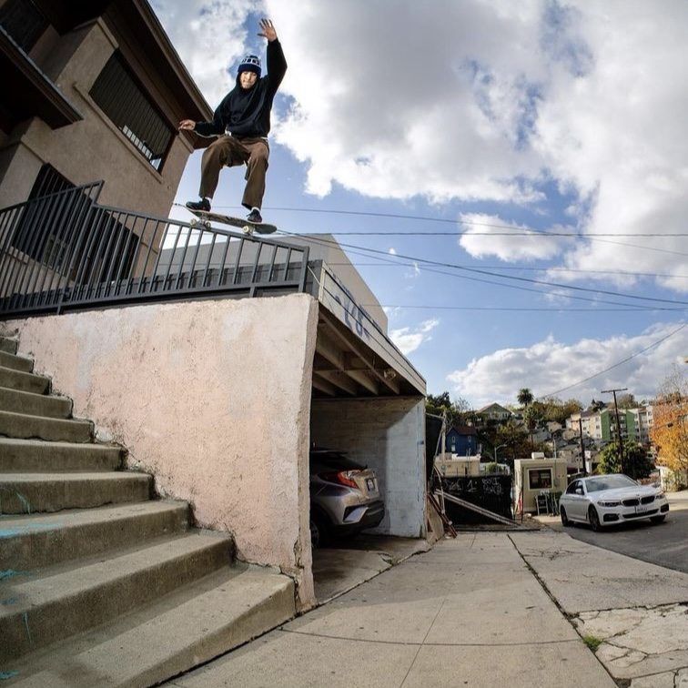
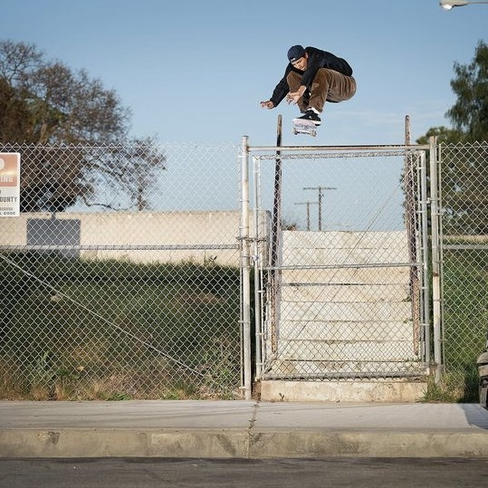
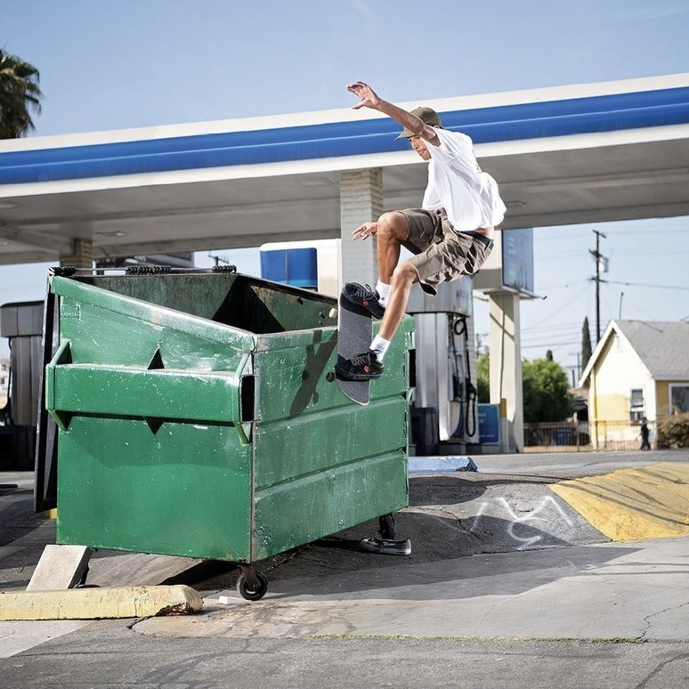
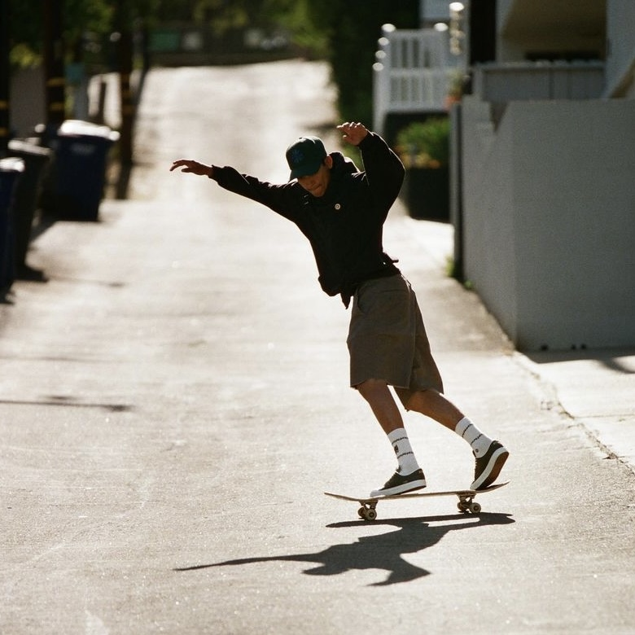
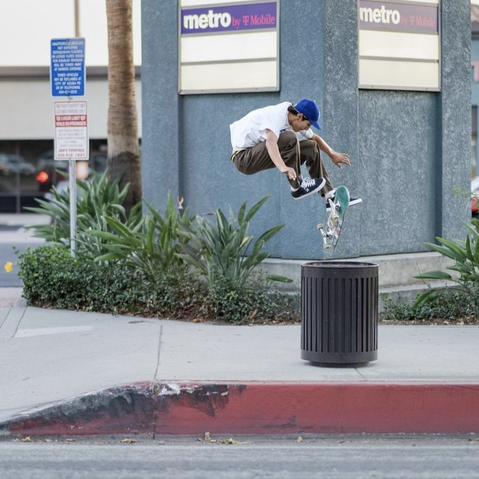

Louie has been a favorite to win SOTY for the past 4 years but is still yet to make it happen. However, he's busted into 2022 swinging for the fences and a lot of skateboarders are claiming him as the clear cut front runner this year.
Louie released his first full-length part of the year in August. This Spitfire part titled "Honor Roll" was filmed entirely on USC's campus in a time span of two weeks. He rips up every inch of the campus with his smooth style we all know and love, leaving viewers with their jaws on the floor.
His second part of the year titled "Louie, Again & Again", came out in September for his board sponsor, FA. This part is a thing of beauty with the classic FA editing style matching Louie's stylish flow perfectly.
   